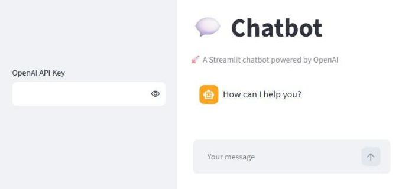
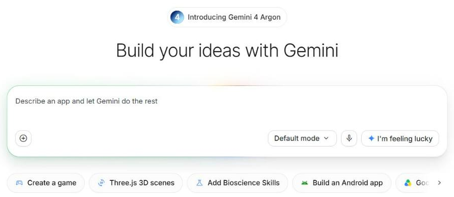

Rapid AI app prototype
Your own chat window with Streamlit in a day — and when a no-code builder is enough
Streamlit, a coding agent, publishing, secrets. Google AI Studio Build, Claude Artifacts. Data as of October 2026.
⏱ 2 min. Welcome. So far we have used other people’s windows: ChatGPT, Claude, AI Studio. Today we build our own AI web app that we can show colleagues and clients. The tool is Streamlit: a web page in plain Python, no HTML. A coding agent writes the code; we learn to understand and check it.
A prototype answers “what will it look like?” in a day, not a quarter
⏱ 5 min. A typical story: the idea “a bot that answers staff from our policy” is discussed for months. A one-day prototype changes the conversation: people open a link, ask their own questions, see the mistakes and say what they really need. That feedback is worth more than another model comparison.
Four stages: the idea in one sentence, a prototype in a day, feedback from three real people, and only then a product that engineers take on: security, scale, support. Today we cover the first three.
Streamlit is a web page in Python: no HTML, no JavaScript

⏱ 5 min. This is the official example from the Streamlit team at llm-examples.streamlit.app. On the left a sidebar with a field for the API key, in the middle the chat messages, at the bottom the input box. This whole interface is about twenty-five lines of Python, no HTML or JavaScript. Streamlit is free and open source; the current version is 1.66 from 14 October 2026, and it needs Python 3.11 or newer.
Note the key field in the example: the user types the key in. For your own prototypes, do not do that — keys and secrets are on slide 6.
The whole chat is 14 lines: show history, take the question, ask the model, show the answer
import streamlit as st def ask_llm(messages): # stub — replace with your L03 API call return "Demo answer: " + messages[-1]["content"] st.title("Support assistant") if "messages" not in st.session_state: st.session_state.messages = [] # chat memory for m in st.session_state.messages: # show history st.chat_message(m["role"]).write(m["content"]) if prompt := st.chat_input("Your question"): st.session_state.messages.append({"role": "user", "content": prompt}) st.chat_message("user").write(prompt) answer = ask_llm(st.session_state.messages) # ask the model st.session_state.messages.append({"role": "assistant", "content": answer}) st.chat_message("assistant").write(answer)
⏱ 6 min. The code behind the chat on the previous slide, simplified. You do not need to be able to write it — an agent will. But you should understand four parts. One: session_state — memory. Without it the chat history would be wiped after every message (why — next slide).
Two: the loop that shows the whole history with st.chat_message. Three: st.chat_input — the input box; when someone sends a question we add it to the history and show it. Four: ask_llm — your model call. At the top of the file it is a stub that just echoes the question, so the code runs at once; later it is replaced with the L03 API call: Gemini, OpenAI or the local model from L10. The answer goes into the history and is shown too. To run: streamlit run app.py — a page opens in the browser.
On every click Streamlit reruns the whole file — that is why memory is needed
⏱ 5 min. Streamlit’s key feature. An ordinary program runs once. Streamlit reruns the whole app.py from top to bottom on every user action — a click, typed text — and redraws the page. That keeps the code simple, but anything held in ordinary variables is lost.
That is why session_state exists — memory that survives the rerun, separate for each visitor. If a student complains “my chat gets wiped”, the history is almost always not in session_state.
Memory, cache and secrets — three things not to mix up
⏱ 5 min. Three ideas beginners confuse. session_state — one visitor’s memory. cache_data (the st.cache_data command) — a shared cache for every visitor: for example, faq.md is read once, not on every click. That is why you never put personal data or keys in the cache: everyone would see them.
secrets — API keys. They live in .streamlit/secrets.toml and are read through st.secrets. The file goes into .gitignore, otherwise the key ends up on GitHub. GitHub blocks pushing detected keys to public repos by default, but do not rely on that.
A coding agent writes the code; you set the task and check the result
Build a Streamlit prototype: a chat assistant that answers staff from faq.md. 1. Python 3.11+, a separate environment: pip install streamlit google-genai 2. First run streamlit skills to add Streamlit’s official skills. 3. Model Gemini 3.8 Flash, key from st.secrets; with no key, a demo mode with a canned answer. 4. History in session_state, read faq.md with st.cache_data. 5. secrets.toml in .gitignore, plus a secrets.example.toml with a placeholder. 6. Run streamlit run app.py and explain every part of the code to me.
⏱ 5 min. How it is done in practice. You do not write the code by hand — you give a coding agent (Codex, Antigravity, Claude Code) a good task. It says what to build, with what, where the key is, what to do without a key, where to keep the history, how not to leak the key and, most importantly, asks to explain the code. What a coding agent is and how to choose one: L16.
New since spring 2026: Streamlit has an official streamlit skills command. It plugs skills into the agent — instructions from the Streamlit authors on building apps properly. Claude Code, Codex and Cursor understand them. A demo mode without a key is a good habit: you can show the prototype at a meeting even before you have a key.
Four steps: install, run, edit, show
⏱ 5 min. Four steps. Install: pip install streamlit, Python 3.11 or newer. Run: streamlit run app.py — a browser opens at localhost:8501; localhost, as in L10, means “this computer”. Edit: save the file, Streamlit offers Rerun, the page refreshes. Show: via screen share or by publishing to Community Cloud.
Where to show a prototype: your computer, the free Streamlit cloud or your company cloud
⏱ 5 min. Three places. Your own computer: free; you see it, and so can colleagues on the office network via the Network URL; everyone else sees it when you share your screen in Teams. Streamlit Community Cloud: free, the app is published from a GitHub repo. An app from a public repo is public; you may have only one private app. It sleeps after 12 hours without visitors, and the first visitor wakes it. The key goes into the app settings, the Secrets section.
Inside a company — Snowflake (the company that owns Streamlit) or your own cloud with role-based access; engineers decide. Hugging Face Spaces, once a popular free option for Streamlit, are no longer free for such apps. The main rule: a public link means public data and your API bill.
Sometimes a builder is enough: an app from a description, no code at all

⏱ 6 min. You do not always need Streamlit. Google AI Studio, the Build section: you write “an app that...” and get a working web app with a preview; you can push it to GitHub or deploy it to Google’s cloud. Apps are private by default, and the Gemini key stays on the server. If you share it, other people’s requests count against your limits.
Claude Artifacts from L09 — small apps right in the chat. Lovable, Bolt and v0 build a whole site from a description; all have a free tier with a small daily allowance: a few requests a day on Lovable and v0, a token budget on Bolt. Streamlit wins when you need Python data work, your own files and full control over the code.
Choose by two questions: what you are showing and whether you will read code
⏱ 5 min. A simple choice table. To show an idea quickly without coding — AI Studio Build or Claude Artifacts. To work with data without your own app — Claude or ChatGPT with files, as in L08. If you are ready to read code with an agent — Streamlit: your own UI and rules, and with pandas, tables and charts from your files.
5 minutes: think which prototype you will show colleagues
Next: hands-on, security, the path to a product, homework.
⏱ 5 min. Press “Start”.
10-minute hands-on: a helper prototype for your FAQ
⏱ 10 min. Hands-on. Everyone builds a helper prototype for their own FAQ: 10 questions and answers, made up or anonymised. Without code — via AI Studio Build. With code — the slide 7 prompt to a coding agent. After 7 minutes 2–3 people share their screen: what they asked and what the prototype answered.
Four prototype rules: keys, data, money, sign-in
⏱ 5 min. Four rules. Keys: only in secrets; do not paste a key into the chat with a coding agent — it may end up in logs. Data: a public prototype gets synthetic data only. Money: set a spending limit in the API console and add a demo mode with no key. Sign-in: if the prototype is not for everyone, make it private in Community Cloud and invite people by email. For engineers: Streamlit also has built-in sign-in with st.login.
What changes when a prototype becomes a product
⏱ 5 min. The prototype has done its job: it showed the idea and gathered feedback. Then it goes to engineers, and much changes. The code lives in a repo with reviews and tests. The data is real, so access rights and logs are needed. The key is not your personal one but a service key with limits and monitoring. And the app must work for everyone, around the clock. Agentic product development — lesson 16.
Homework: a prototype and feedback from three real people
- The prototype idea in one sentence: for whom and what it does
- Build it: Streamlit with an agent, or AI Studio Build
- Synthetic data only; the key in secrets
- Show it to 3 colleagues and record their feedback
- What you would change — 3 points
genai-homeworks/L14/ ├─ README.md # idea, conclusion ├─ app.py or a link ├─ faq.md # synthetic ├─ feedback.md # 3 people’s feedback └─ demo.png
⏱ 6 min. Homework: a prototype for your work and, above all, feedback from three colleagues. Build it any way — Streamlit with an agent or AI Studio Build. Synthetic data only. Show it to three people, record what they said and three changes you would make. Grading looks not at polish but at how much the prototype helped you understand the task. Details in L14_05_Homework.
A prototype in a day, memory in session_state, keys in secrets, you check the code
⏱ 5 min. Four ideas. A prototype in a day is more useful than a month of meetings. Streamlit is Python plus a rerun on every click, so memory lives in session_state. Keys only in secrets; a public link means public data. The agent writes the code, and you check it and ask for explanations. Next lesson — responsible AI, security and law.